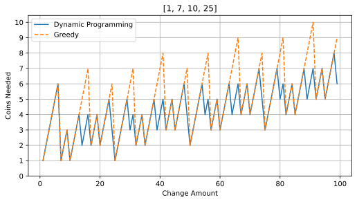

Lab 4: Making Change with Dynamic Programming (5 Points)
Chris Tralie
Overview / Logistics
The purpose of this lab is to get you practice with dynamic programming. The problem is as follows: make change of a particular number with an arbitrary set of valued coins. You can take as many of each type of coin as you want, but your goal is to minimize the number of coins used.
Step 1: Recursive Solution with Memoization (2 Points)
As your first task, write a method make_change(coins, value, mem) that computes the minimum number of coins from the list coins needed to make the amount value, while passing along a dictionary mem for memoization
As an example, if you call print(make_change([1, 5, 10, 25], 70, {})), you should get 4 (e.g. 2x25c + 2x10c)
For a slightly more exotic example, if you call print(make_change([1, 7, 10, 25], 41, {})), you should get 5 (e.g. 4x10c + 1x1c, or 2x1c + 2x7c + 1x25c)
NOTE: As we saw in class, it's possible to use functools to memoize automatically, but I want you to get practice with dictionaries
Step 1: Dynamic Programming Solution with Backtracing (3 Points)
In your second task, write a method make_change_dyn(coins, value) that implements the same thing using dynamic programming. But instead of returning the number of coins needed, you should go a step further and return a solution with the specific coins used to achieve the optimal solution, as a list. For example, if you call
print(make_change_dyn([1, 5, 10, 25], 70))
then you should get [25, 25, 10, 10] (not necessarily in that order)
If you instead call
print(make_change_dyn([1, 7, 10, 25], 41))
then you should get a list of 5 coins that add up to 41, such as [25, 7, 7, 1, 1]
A Note on Greedy Solutions
It might be tempting to solve this problem by taking the highest coins away that we can first. For example, if we have the 1, 5, 10, and 25 that we're used to using, and we want to make change of 71, we'll start by taking away as many 25c as we can way, leaving us with 71-2x25 = 21, and then taking as many of the next largest coin (10c) as we can away, so 21-2x10 = 1, and then finally taking one 1c away. This works perfectly well for the 1, 5, 10, and 25 cent coins we're used to using, but it doesn't work when we use some more exotic values.
As an example of where there's a disparity, we know from the above examples that making 41 cents with 1, 7, 10, and 25 cent coins should only take 5 steps. However, a greedy solution will first take 25 away, leaving 16. Then it will take 10 away, leaving 6. And the best it can do after that is 6x1c. So a greedy solution ends up taking 8 steps instead of 5!
By contrast, if we switch to ordinary coins, the greedy solution works just the same. But this is a cautionary tale about greedy solutions in general; sometimes we take steps that look good in the near term, but they end up trapping us into taking non-optimal steps later. Below is a plot showing the disparity between greedy and optimal solutions for values up to 100c using 1, 7, 10, and 25 cent coins:
